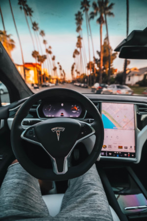

Futuras Tecnologias e Tendências do mercado
As tecnologias desempenham um papel essencial de facilitar a vida das pessoas, como meio para que a sociedade e o mercado evoluam. todo dia novas tecnologias colidem o dia a dia das pessoas, impactando em sua vida e no seu trabalho. Para quem quer estar à frente dessa transformação, é essencial entender o que vem pela frente. Podemos dizer que entre as principais tendências tecnológicas, Da evolução da inteligência artificial, da internet das coisas (IoT) e 5G à computação em nuvem, big data e analytics e carros autônomos a tecnologia tem o potencial de transformar o futuro do mundo, E a tendência é que isso cresça cada vez mais.
Big Data
A tecnologia big data tem a capacidade de cruzar informações de diferentes fontes, como bancos de dados, cadastros de consumidores, históricos de mensagens e de interações com os clientes. big data são dados com maior variedade que chegam em volumes crescentes e com velocidade cada vez maior. ... Simplificando, big data é um conjunto de dados maior e mais complexo, especialmente de novas fontes de dados.O sistema pode monitorar, por exemplo, conversas em mídias sociais. Com o big data, você obtém respostas mais completas,porque tem mais informações. Respostas mais completas significam mais confiança nos dados, ou seja, uma abordagem completamente diferente para lidar com problemas.O objetivo do big data é basicamente aprimorar os processos de trabalho de seu usuário, ao obter interpretações rápidas e valiosas sobre as tendências do mercado, comportamento de consumo e oportunidades potenciais. Até 2023, mais de 33% das empresas terão analistas com foco nas decisões estratégicas e usando o big data como fonte facilitadora dos novos processos adotados pela organização. A tomada de decisões tornar-se á ainda mais rápida e eficaz, com menos intervenção em cima de planilhas e planilhas de dados.O futuro do big data está muito atrelado às tendências tecnológicas que surgem no mercado. A computação em nuvem proporciona ótimos benefícios às empresas data driven, trazendo maior escalabilidade e elasticidade aos processos e reduzindo custos com eficiência..

Inteligência Artificial
Podemos dizer que o conceito de IA está relacionado à capacidade de soluções tecnológicas realizarem atividades de um modo considerado inteligente. IAs também podem “aprender por si mesmas” graças a sistemas de aprendizado que analisam grandes volumes de dados, possibilitando a elas ampliarem seus conhecimentos. Uma solução de IA envolve um agrupamento de várias tecnologias, como redes neurais artificiais, algoritmos, sistemas de aprendizado, entre outros que conseguem simular capacidades humanas ligadas à inteligência. Por exemplo, o raciocínio, a percepção de ambiente e a habilidade de análise para a tomada de decisão, o seu propósito é estudar, desenvolver e empregar máquinas para realizarem atividades humanas de maneira autônoma. Segundo a IDC (International Data Corporation), os gastos globais com inteligência artificial chegarão a US$ 110 bilhões em 2024. Segundo a pesquisa, até 2023 um quarto das empresas vai utilizar pelo menos um projeto de software de IA e suas vertentes, como machine learning e deep learning. Analistas estimam que a IA adicionará mais de 15,7 trilhões de dólares à economia mundial até 2030. O uso da IA vem ganhando cada vez mais força. Antes a preocupação era a de que a Inteligência Artificial iria substituir os humanos, Acredito que o futuro da IA irá auxiliar a melhorar a automatização de processos, tornando-os mais produtivos e proveitosos, como por exemplo, irá ajudar na segurança da informação.
Aplicações atuais com a IA
- Inteligência Artificial no reconhecimento facial no Facebook
- Indicação de produtos e conteúdos através de inteligência artificial
- Chatbots de contato com o cliente através de inteligência artificial
- Assistentes por voz de inteligência artificial
- Sistema de pesquisa do Google
- Segurança online
- Internet das Coisas
Carros Autônomos
Carros autônomos são uma nova tecnologia automotiva que utiliza um sistema de navegação que independe do controle direto de um motorista. Ou seja, são automóveis capazes de se dirigirem sozinhos, interpretando os caminhos que devem seguir e tomando decisões com base em inteligência artificial. A grande vantagem é que esses equipamentos fazem uma verdadeira varredura ao redor do veículo, permitindo que ele enxergue em 360 graus. Desse modo, ele pode perceber situações que dificilmente o olho humano conseguiria captar, aumentando consideravelmente a segurança dos carros autônomos eles mapeiam as suas imediações usando diversos sensores espalhados pelo veículo.Essa ideia é uma forte tendência para o futuro do segmento automotivo. A previsão é que em 2025 os carros autônomos representem 4% do total de veículos vendidos no mundo e em 2035 essa previsão sobe para 75%! O Brasil também possui seus protótipos de carros autônomos. Na Faculdade de Engenharia de UFMG já está em testes o CADU (Carro Autônomo Desenvolvido), enquanto na USP de São Carlos, os trabalhos com o CaRINA (Carro Inteligente para Navegação Autônoma) seguem desde 2011. De acordo com estudo "Mobilidade do Futuro", da Allianz Partners, esse cenário deve se tornar realidade até 2040. Mas, para que o futuro sem acidentes e mortes no trânsito saia do mundo das ideias, o carro autônomo é fundamental, aponta o estudo - e também especialistas do setor de mobilidade. Na indústria, há quem aposte que o veículo capaz de dispensar o motorista em qualquer situação, ou com automação de nível 5 (veja detalhes no quadro), não saia do papel. O que é viável, e promete estar nas ruas já a partir do ano que vem, é o carro autônomo de nível 4. Volvo, BMW e Mercedes-Benz prometem colocar com esse estágio de automação no mercado já no ano que vem.
Robôs Domésticos
Os robôs saíram da ficção científica para fazer parte das nossas vida, cada vez mais intensa. as principais áreas onde robôs estão presentes no nosso cotidiano são em trabalhos Domésticos, industrial, medicina, militar e setor automotivo. robôs humanoides ocuparão espaço na sociedade em um futuro bem próximo, Com a nova geração, a história é outra. A inteligência artificial por trás dos robôs — leia-se sistemas informatizados e algoritmos,procura realizar atividades próprias da natureza humana,Robôs pessoais já ocupam lares em diferentes partes do mundo. Um exemplo da imagem é o Robô Pepper, o robô que sabe quando você está triste ou feliz,Medindo 1,2 m e pesando quase 30 kg, o Pepper é um robô humanoide que vem sendo comercializado desde 2014. Ou quase humanoide: nele, as pernas deram lugar a um conjunto de rodas. Mas braços com mãos estão ali, além do rosto com feições bem amigáveis, ele parece estar sempre feliz. o Pepper não é muito diferente do Asimo ou mesmo do Qrio. O que o torna distinto é a forma como a tecnologia é usada nele: a SoftBank promove o Pepper como um robô capaz de reconhecer emoções e agir de acordo com elas. Tudo indica que o segredo para a aceitação de robôs domésticos está aí. Para identificar emoções e interagir de modo correspondente, o Pepper recebeu tecnologia de reconhecimento de voz, além câmeras e sensores que o ajudam a fazer leitura corporal. Os dados obtidos são analisados em tempo real por um sistema baseado em redes neurais artificiais. A partir daí o Pepper pode conversar, dançar, sugerir exercícios de relaxamento, ficar feliz quando elogiado, dar boas-vindas quando você chega em casa. Um novo estudo da Juniper Research descobriu que mais de 74 milhões de robôs de consumo serão embarcados em 2024, contra cerca de 28 milhões em 2019. Ele prevê que o foco dos fornecedores em recursos educacionais em robôs de consumo.